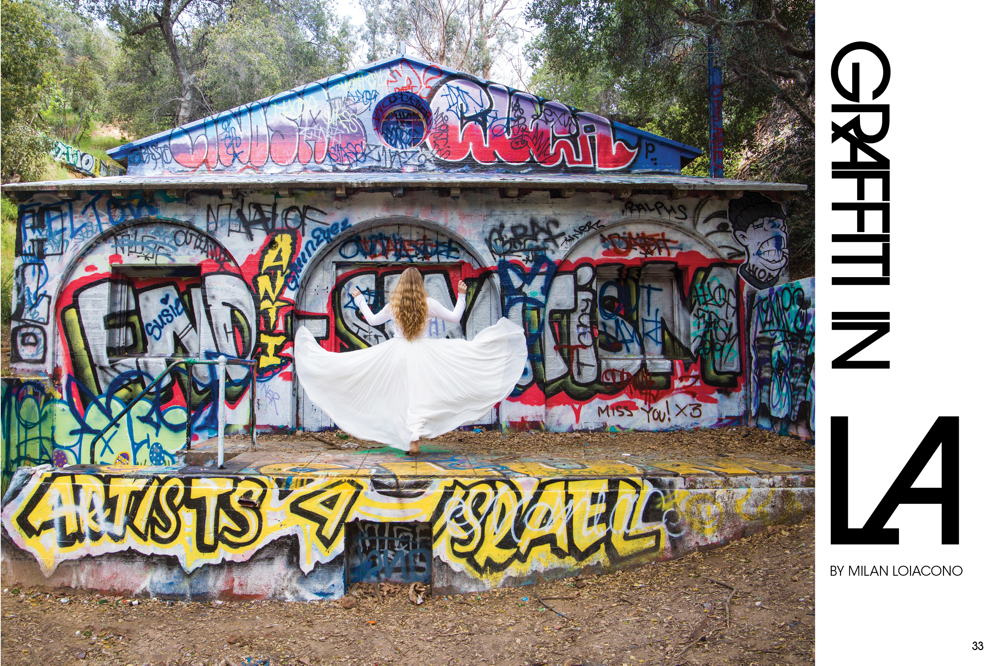
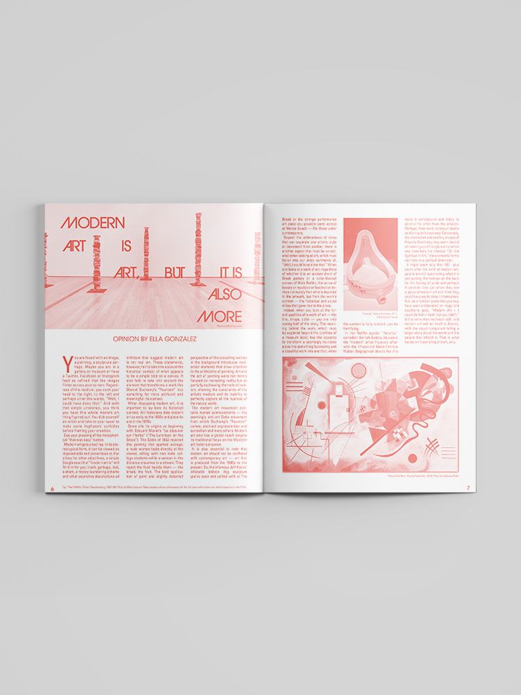
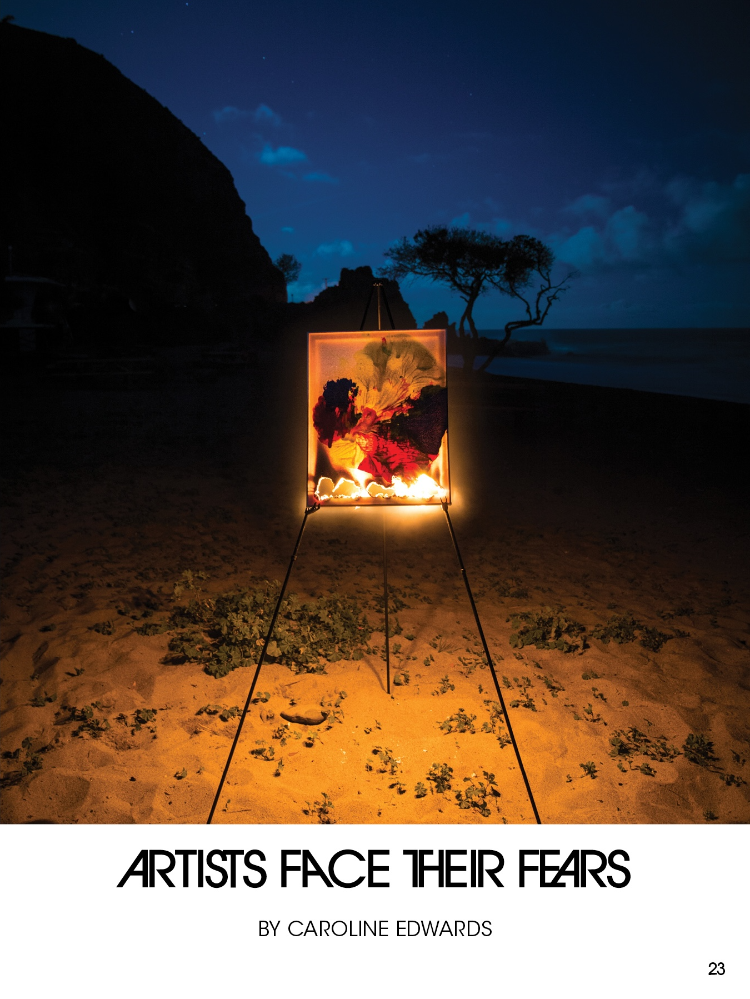
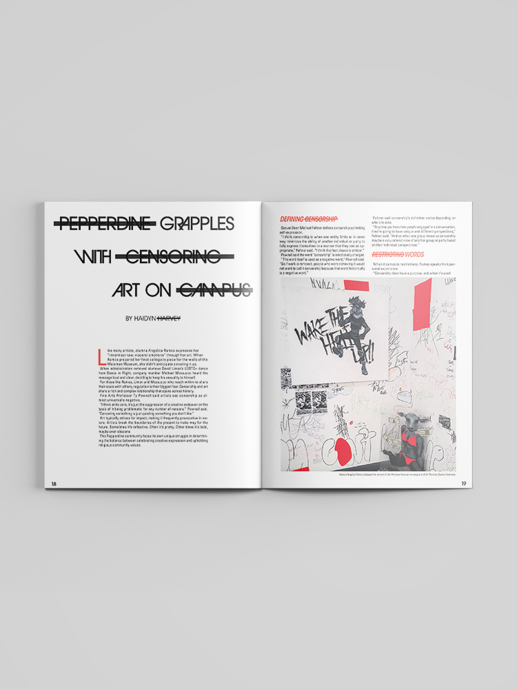
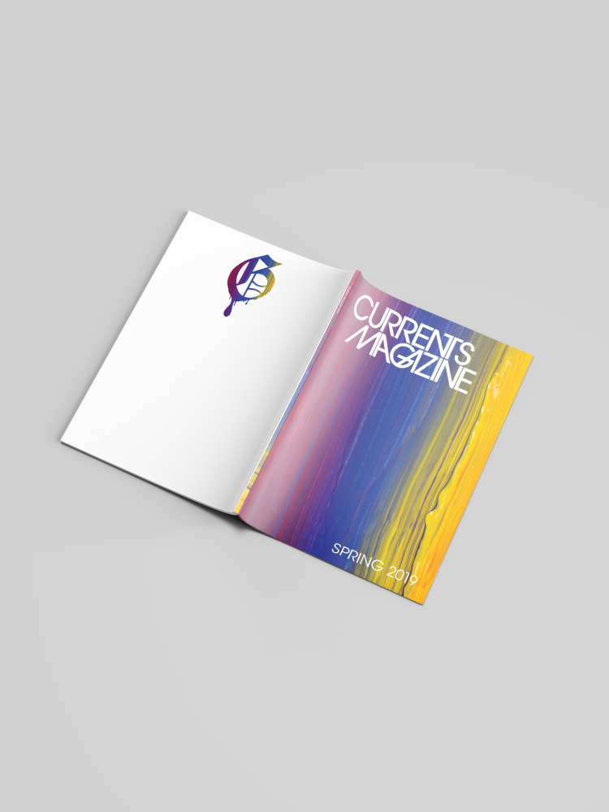
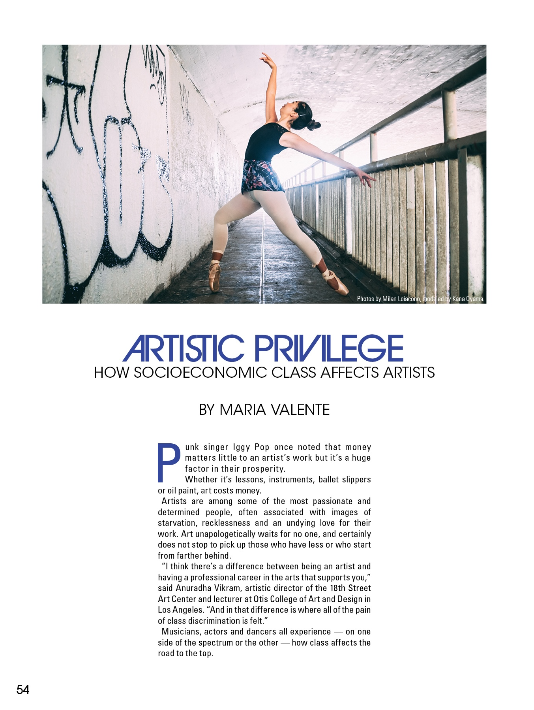
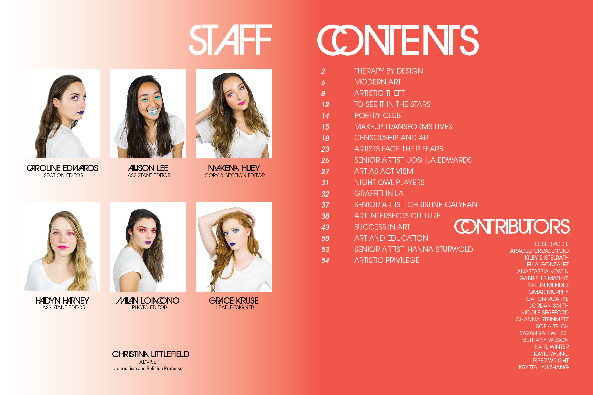

The second magazine I designed was vastly different from the first. Since the topic was "Art" the design of the magazine was my way of expressing my own artform. I wanted the magazine to be a bit satirical, taking the stereotypical artsy style to an extreme which I did by using the three primary colors and the ligature filled typeface, Avant Garde. Instead of trying to create something new that represented art, the best way to showcase the process was to go a little over the top to make it artsy. View the full magazine on Issuu







Huge shoutout to the amazing team that helped create this magazine. As always, this wouldn't have come to life without the work of the writers, editors, and incredible photographer, Milan Loiacono. The collaborative process was essential to bringing this vision to life.